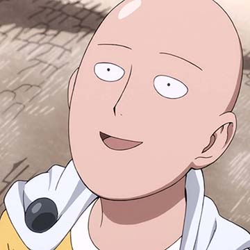
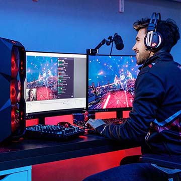

Ahmad Naufal Tsani Azizy 213140714111078



Saitama adalah protagonis utama dari seri dan One-Punch Man tituler . Dia adalah makhluk paling kuat yang ada di serial ini. Saitama menghadapi krisis eksistensial yang dipaksakan sendiri, karena dia sekarang terlalu kuat untuk mendapatkan sensasi apa pun dari pertempuran.
Awalnya hanya pahlawan untuk bersenang-senang, Saitama kemudian mendaftar menjadi pahlawan profesional untuk Asosiasi Pahlawan setelah menyadari bahwa tidak ada yang mengenalinya sebagai pahlawan, dan mempertahankan rumahnya di Z-City dari monster , penjahat , dan lainnya. ancaman. Di bawah Asosiasi Pahlawan, ia diberi nama pahlawan Caped Baldy (ハゲマント, Hagemanto ; Yaitu: Bald Cape ) dan saat ini berada di Peringkat B-Class 7.
Saitama adalah orang yang acuh tak acuh. Bahkan musuh terkuat pun tidak memberikan tantangan kepadanya, jadi dia tidak menganggap serius pekerjaan pahlawannya, melewati semuanya dengan sedikit atau tanpa usaha, dan mendambakan lawan yang dapat memberinya tantangan. Kurangnya lawan yang layak telah membuatnya menderita krisis eksistensial yang dipaksakan sendiri, dan dia mengklaim bahwa kemampuannya untuk merasakan setiap dan semua emosi telah sangat berkurang. Perpaduan antara sikapnya, kekuatannya yang tak terbendung, dan penampilannya yang "tidak mengesankan" seringkali membuat pertarungannya menjadi antiklimaks. Saitama biasanya akan membiarkan lawannya mengoceh tentang motif dan kekuatan mereka menjadi bentuk terkuat mereka, sebelum melenyapkan mereka dengan satu pukulan.
Saitama sangat rendah hati, karena dia dengan sengaja membiarkan massa berbalik melawannya agar pahlawan yang kalah diberi penghargaan atas upaya mereka melawan Raja Laut Dalam , bahkan mengklaim bahwa mereka telah melemahkan monster itu sebelum kedatangannya. Dia melakukan hal yang sama untuk kantor polisi , membunuh monster saat menyamar sebagai petugas polisi , meskipun berpotensi mendapatkan banyak ketenaran jika dia mengungkapkan siapa dia sebenarnya. Dia juga tidak keberatan bahwa King memuji semua pencapaiannya.
Prodi Teknologi Informasi Bidang Minat Bisnis Digital & E-Commerce
Jalan Raya Candi Blok 2A No. 369B Karang Besuki, Sukun, Kota Malang